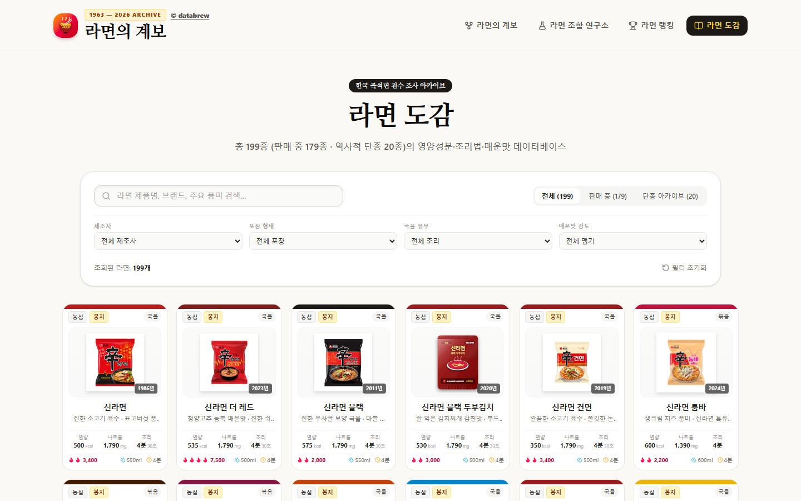
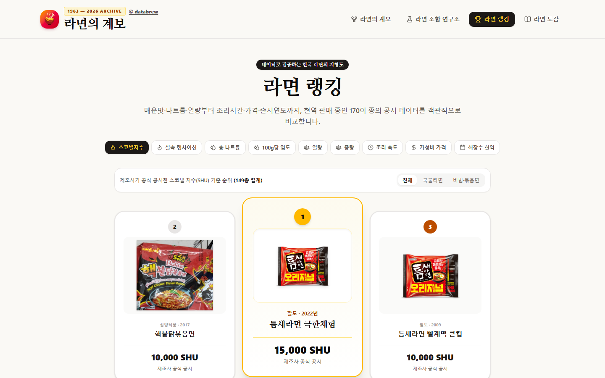
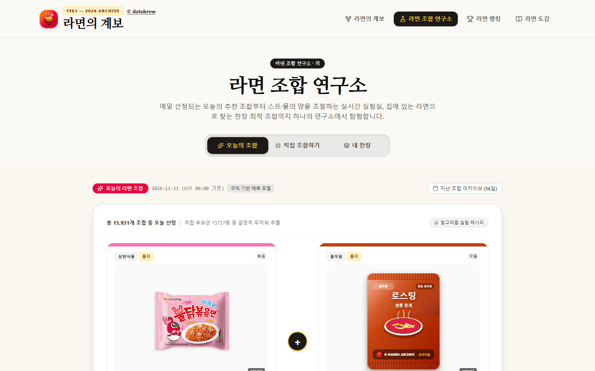

What this project is
Ramen is one of the foods Koreans eat most often, yet we hardly know which ramen branched off from where. Why are Shin Ramyun and Jin Ramen eternal rivals, how did Jjapaghetti and Paldo Bibimmyun open the non-broth market, and why are Kkokkomyun and Nagasaki Jjamppong called the white-broth uprising?
This project unpacks sixty years of ramen in the grammar of a party lineage chart. Direct succession from one product to the next, lineage branching like limbs of a tree, market competition (rivalry) between products in the same market, and shifts in the current of taste are drawn as different kinds of lines, and ramen is divided into the broth faction (tang-pa) and the non-broth faction (geon-pa), organized into 6 reigns and 9 decisive turning points.
It doesn't stop at the lineage chart but connects to data on ramen on sale now. Find nutrition facts, cooking methods and spiciness in the encyclopedia, compare Scoville index, sodium and value for money in the rankings, and pick up today's ramen combination in the combination lab.
Flavor compatibility is a rule-based prediction model, not measured fact. Sodium figures for products where noodles and soup are not separate are disclosed as estimates.
What you can do
A lineage chart that draws sixty years of Korean ramen as factions, splits and reigns of taste. View it as the full lineage (23 generations), the broth faction (tang-pa), the non-broth faction (geon-pa), and fateful rival matchups, and switch between era-by-era reigns and a horizontal-canvas or vertical faction-genealogy view. Direct succession, lineage branching, market competition and shifts in the current of taste are distinguished by line shape.
Tap the 6 eras — the founding and the birth of the originals (1963–), the great split into broth and dry, the unification of the realm by spicy beef broth, the white-broth uprising, the Buldak fire and the premium war, and cream fusion and the contention of a hundred schools — and the 9 turning points such as Samyang Ramen at 10 won, Jjapaghetti and Paldo Bibimmyun, Kkokkomyun, Buldak Bokkeummyun and Shin Ramyun Tumba, to unfold the market situation and differentiators of the time.
A corner, reached with the "Which ramen faction am I?" button on the lineage chart, that tells you which faction your taste is closest to. You can also search the chart by ramen name or manufacturer to highlight that ramen's line.
It gathers nutrition facts, cooking methods and spiciness for 199 varieties in all: 179 on sale and 20 discontinued ones that have passed into history. Filter by manufacturer — Nongshim, Samyang Foods, Ottogi, Paldo, Pulmuone, Harim, and convenience-store private-label makers — by pouch or cup, whether it has broth, and spiciness level.
It compares the disclosed data of some 170 varieties currently on sale by Scoville index, total sodium, calories, weight, cooking speed, value-for-money price, and longest-running active product. The Scoville index is ranked using values officially disclosed by the manufacturers.
It offers Today's Combination, one picked each day; Build Your Own, where you experiment in real time while adjusting the amounts of soup and water; and My Cupboard, which finds the best combination from the ramen you have at home. Every combination comes with a compatibility score, a surprise score and a recommended cooking time.
Screen preview
Lineage chart — factions, splits, reigns

Encyclopedia — a full survey of 199 instant noodles

Rankings — spiciness, sodium, value for money

Combination lab — today's ramen combination
Data and how it is made
Flavor compatibility is not measured fact, and sodium figures for products where noodles and soup are not separate are estimates. The data principles, analysis methodology and reliability criteria are published separately at the bottom of the service.
Technology and how it was built
Development status
Data as of November 2026. The encyclopedia of 199 varieties (179 on sale, 20 discontinued), rankings of some 170 varieties, and the daily-changing Today's Combination are all open. When new products come out, they are added to the encyclopedia and lineage.